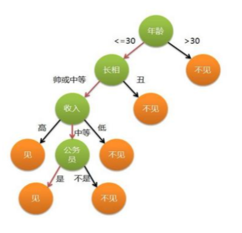
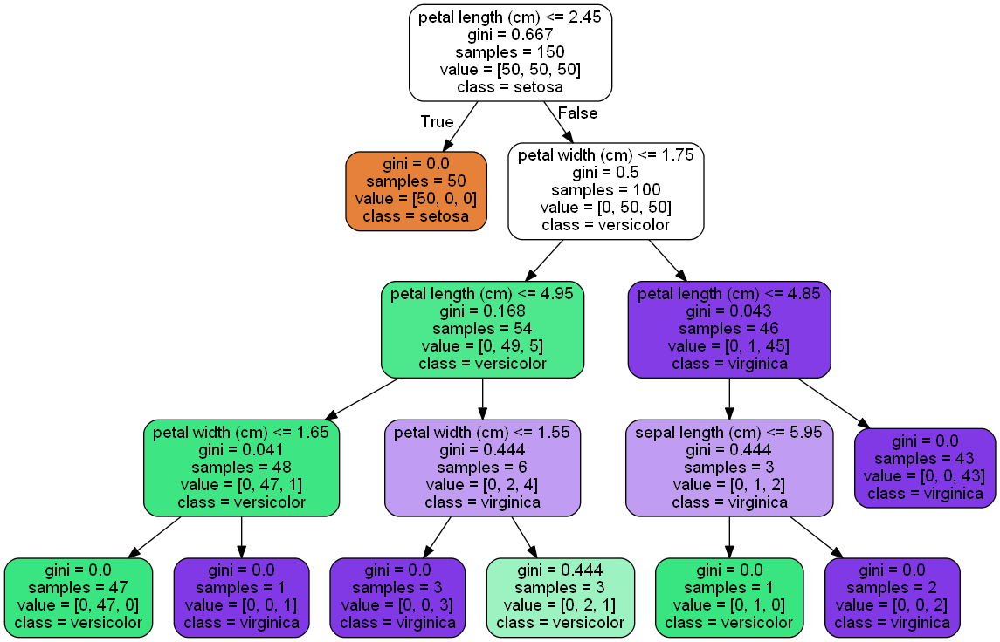
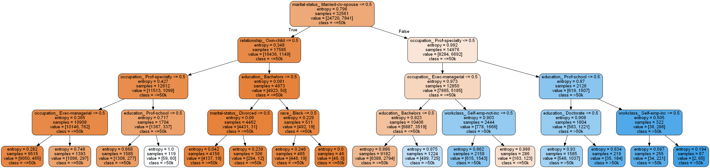

文章目录
声明: 本文由DataScience原创发表, 转载请注明本文链接mlln.cn, 并在文后留言
转载.
本文代码运行环境:
- windows10
- python3.6
- jupyter notebook
理论模型
决策树模型是一个模拟人类决策过程的模型, 以找对象为例, 我们在判断是否见面时, 可能有如下的思想过程:

决策树基于“树”结构进行决策
- 每个“内部结点”对应于某个属性上的”判断标准”
- 每个分支对应于该属性的某些取值
- 每个“叶结点”对应于一个“预测结果”
基本流程
数据整理: 搜集一些相亲对象的数据, 包括年龄/长相/收入/是否公务员, 另外自己贴上标签(见面/不见面)
学习过程：通过对训练样本的分析来确定“划分属性” （即内部结点所对应的属性）
预测过程：将测试示例从根结点开始，沿着划分属性 所构成的“判定测试序列”下行，直到叶结
信息熵
信息熵是度量样本纯度的一种指标, 比如上面的例子中, 你比较人性, 不管什么条件的人, 你都不见, 那么样本的信息熵就是0, 也就是样本纯度越高, 信息熵越小。为了便于理解, 后面我都说纯度来代表信息熵。有些算法会使用信息增益率/基尼系数等, 这里不做具体算法解释。
属性选择
训练阶段, 如何构建一课决策树? 为什么第一个节点选择了”年龄”这个属性, 而不是其他?
属性选择的流程是这样的:
- 遍历所有属性, 假设使用这个属性进行分类, 计算分类后的样本的纯度
- 选择属性使得分类后样本的纯度最高
停止条件
三种停止条件：
- 当前结点包含的样本全属于同一类别，无需划分;
- 当前属性集为空, 或是所有样本在所有属性上取值相同，无法划 分;
- 当前结点包含的样本集合为空，不能划分
用决策树模型完成分类问题
把需要的工具库import进来
1 | #用于数据处理和分析的工具包 |
案例1: 鸢尾花分类
读取数据
1 | from sklearn.datasets import load_iris |
输出(plain):
['DESCR', 'data', 'feature_names', 'target', 'target_names']
['DESCR', 'data', 'feature_names', 'target', 'target_names']
1 | iris_feature_name = iris.feature_names |
1 | iris_feature_name |
输出(plain):
['sepal length (cm)',
'sepal width (cm)',
'petal length (cm)',
'petal width (cm)']
['sepal length (cm)',
'sepal width (cm)',
'petal length (cm)',
'petal width (cm)']
1 | iris_target_name |
输出(plain):
array(['setosa', 'versicolor', 'virginica'], dtype='
array(['setosa', 'versicolor', 'virginica'], dtype='
构建模型
1 | clf = tree.DecisionTreeClassifier(max_depth=4) |
输出(plain):
DecisionTreeClassifier(class_weight=None, criterion='gini', max_depth=4,
max_features=None, max_leaf_nodes=None,
min_impurity_decrease=0.0, min_impurity_split=None,
min_samples_leaf=1, min_samples_split=2,
min_weight_fraction_leaf=0.0, presort=False, random_state=None,
splitter='best')
DecisionTreeClassifier(class_weight=None, criterion='gini', max_depth=4,
max_features=None, max_leaf_nodes=None,
min_impurity_decrease=0.0, min_impurity_split=None,
min_samples_leaf=1, min_samples_split=2,
min_weight_fraction_leaf=0.0, presort=False, random_state=None,
splitter='best')
可视化
1 | dot_data = tree.export_graphviz(clf, |

案例2: 收入分类
读取数据
1 | adult_data = pd.read_csv('./DecisionTree.csv') |
输出(html):
| workclass | education | marital-status | occupation | relationship | race | gender | native-country | income | |
|---|---|---|---|---|---|---|---|---|---|
| 0 | State-gov | Bachelors | Never-married | Adm-clerical | Not-in-family | White | Male | United-States | <=50K |
| 1 | Self-emp-not-inc | Bachelors | Married-civ-spouse | Exec-managerial | Husband | White | Male | United-States | <=50K |
| 2 | Private | HS-grad | Divorced | Handlers-cleaners | Not-in-family | White | Male | United-States | <=50K |
| 3 | Private | 11th | Married-civ-spouse | Handlers-cleaners | Husband | Black | Male | United-States | <=50K |
| 4 | Private | Bachelors | Married-civ-spouse | Prof-specialty | Wife | Black | Female | Cuba | <=50K |
1 | adult_data.shape |
输出(plain):
(32561, 9)
(32561, 9)
1 | adult_data.columns |
输出(plain):
Index(['workclass', 'education', 'marital-status', 'occupation',
'relationship', 'race', 'gender', 'native-country', 'income'],
dtype='object')
Index(['workclass', 'education', 'marital-status', 'occupation',
'relationship', 'race', 'gender', 'native-country', 'income'],
dtype='object')
区分一下特征(属性)和目标
1 | feature_columns = [u'workclass', u'education', u'marital-status', u'occupation', u'relationship', u'race', u'gender', u'native-country'] |
1 | #区分特征和目标列 |
输出(html):
| workclass | education | marital-status | occupation | relationship | race | gender | native-country | |
|---|---|---|---|---|---|---|---|---|
| 0 | State-gov | Bachelors | Never-married | Adm-clerical | Not-in-family | White | Male | United-States |
| 1 | Self-emp-not-inc | Bachelors | Married-civ-spouse | Exec-managerial | Husband | White | Male | United-States |
特征处理/特征工程
1 | features = pd.get_dummies(features) |
输出(html):
| workclass_ ? | workclass_ Federal-gov | workclass_ Local-gov | workclass_ Never-worked | workclass_ Private | |
|---|---|---|---|---|---|
| 0 | 0 | 0 | 0 | 0 | 0 |
| 1 | 0 | 0 | 0 | 0 | 0 |
| 2 | 0 | 0 | 0 | 0 | 1 |
| 3 | 0 | 0 | 0 | 0 | 1 |
| 4 | 0 | 0 | 0 | 0 | 1 |
| 5 | 0 | 0 | 0 | 0 | 1 |
| 6 | 0 | 0 | 0 | 0 | 1 |
| 7 | 0 | 0 | 0 | 0 | 0 |
| 8 | 0 | 0 | 0 | 0 | 1 |
| 9 | 0 | 0 | 0 | 0 | 1 |
构建模型
1 | #初始化一个决策树分类器 |
输出(plain):
DecisionTreeClassifier(class_weight=None, criterion='entropy', max_depth=4,
max_features=None, max_leaf_nodes=None,
min_impurity_decrease=0.0, min_impurity_split=None,
min_samples_leaf=1, min_samples_split=2,
min_weight_fraction_leaf=0.0, presort=False, random_state=None,
splitter='best')
DecisionTreeClassifier(class_weight=None, criterion='entropy', max_depth=4,
max_features=None, max_leaf_nodes=None,
min_impurity_decrease=0.0, min_impurity_split=None,
min_samples_leaf=1, min_samples_split=2,
min_weight_fraction_leaf=0.0, presort=False, random_state=None,
splitter='best')
将模型用于预测
1 | clf.predict(features.values) |
输出(plain):
array([' <=50k', ' <="50K'," ...,>50K'], dtype=object)
array([' <=50k', ' <="50K'," ...,>50K'], dtype=object)
可视化一下这颗决策树
1 | dot_data = tree.export_graphviz(clf, |

注意
本文由jupyter notebook转换而来, 您可以在这里下载notebook
有问题可以直接在下方留言
或者给我发邮件675495787[at]qq.com
请记住我的网址: mlln.cn 或者 jupyter.cn